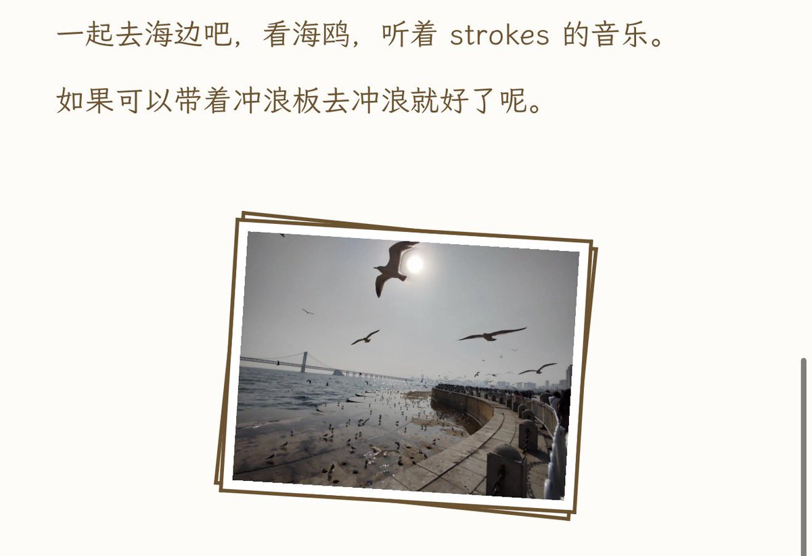

池鱼鱼🍥
@Chiyuyu520
羽涟，我来看你了
我来到了你的城市，星海广场真的好漂亮
羽涟，一直有人记得你
是你吗 头戴着花环 衔着最纯净的枝丫，
是你吧 撕下一缕霓裳 借我照亮 盒中之花，
是你吗 在某一天默默消失在春天的遥望，
可我呀 记得你的所有 我不会忘 我不会忘，
是你吗 在回家的路上 洒满月光点亮花蕊，
是你吧 弹奏古老和弦 赶走梦魇 伴我入睡。
是你吗 把头顶的雨水 编织成蓝色的屋檐，
约好啦 等我们都长大 再次冒险 追寻梦的蔓延。

羽涟Nya
@yulianNyanner
祝我生日快乐，不过真好笑，一年前的我已经自杀了呢，不知道群里的大家还在不在，不用担心哦，我在二次元很幸福呢，我在那里等着大家